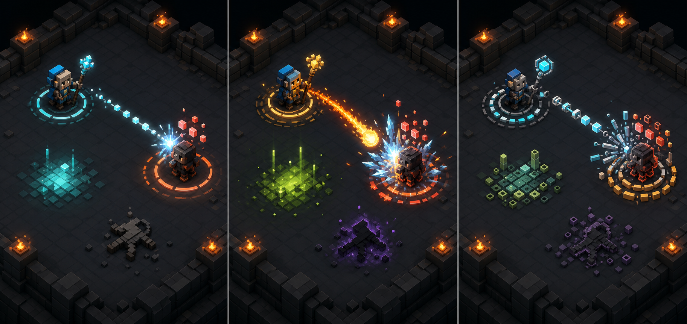
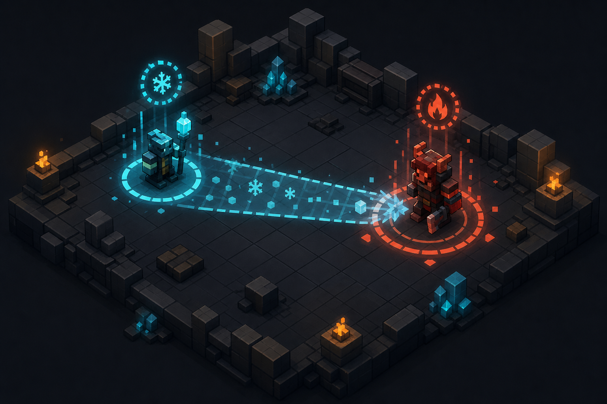
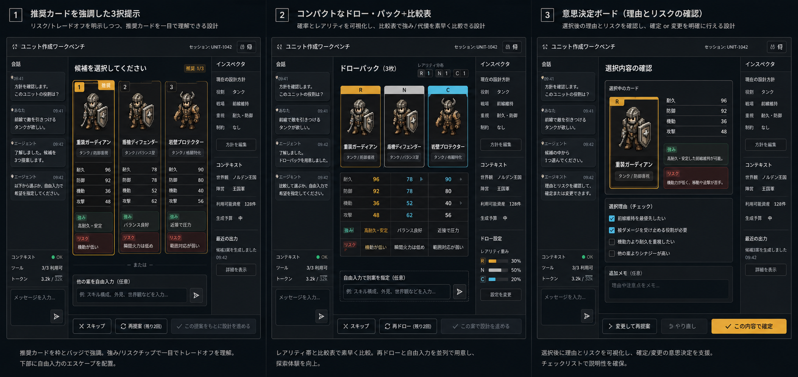
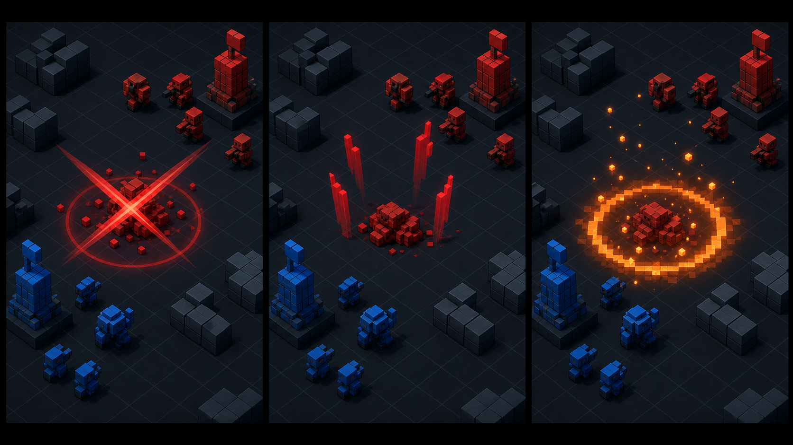
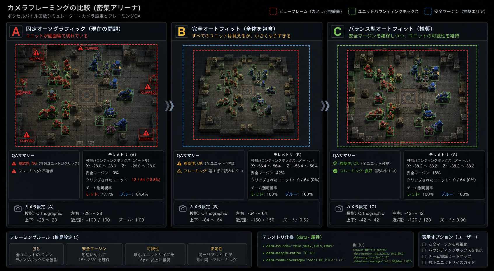
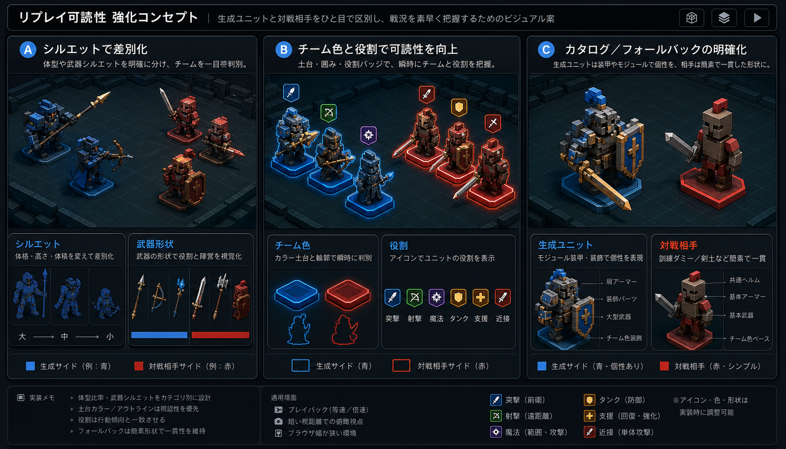

LLMに「作らせて、検証する」 付録 / シリーズ目次
設計ボード抄 — 見た目と演出をどう決めたか
リポジトリには、演出と UI の設計探索ボードが50枚以上残っています。
全部を並べると議論の跡ではなく物量になってしまうので、
「何を比較して、どれを選び、いまの実装にどう繋がったか」が分かる6枚だけを選びました。
各ボードは AI による画像生成やモックで方向性を比較し、選定理由を内部設計書に記録してから実装した、という順序で作られています。
原本はリポジトリの docs/internal/ にあります。
1. リプレイ演出言語のコンセプト

演出は「戦闘の真実(対戦ログ)」に一切触れず、ログから決定論的に導出する — という基本方針を固めたボード。
以後のすべての演出(攻撃ポーズ、VFX、黒落ち、カメラ)がこの原則の上に乗っています。
2. 演出方向の三案比較

戦闘演出の方向性は「シグナルグリフ(記号で語る)」「キネティックモーション(動きで語る)」
「インパクトシアター(打撃感で語る)」の三案を並行スケッチして比較しました(これはシグナルグリフ案)。
採用は要素の折衷で、状態異常は記号バッジ、攻撃は動きとヒットフラッシュ、決着は舞台的な演出に落ちています。
3. 候補カード UI

第3回で書いた「おすすめ/攻めた案/変化球」カードの設計ボード。
見返り・リスク・向きの3行構成と、既定案の明示、テレメトリ計測をこの段階で決めています。
4. 死亡演出の選択肢

撃破の見せ方の比較ボード。当初は崩壊エフェクト+一定時間後の消滅を採用しましたが、
発表準備のフィードバックで「戦場に何も残らないと戦況が読めない」ことが分かり、
現在は全身グレースケール+倒れポーズで遺骸が残る方式に発展しています。探索→採用→運用で覆る、の実例です。
5. カメラフレーミング

俯瞰カメラの取景設計。決定論のテレメトリ(取景範囲・表示範囲)を出す方針はここで決定。
その後、展示用に俯角48°の透視カメラ(showcase モード)と時間窓フレーミングが追加され、
このボードのテレメトリ設計がそのまま検証手段になりました。
6. ユニット判読性

「どちらのチームの、どの役割か」を一目で読ませるための比較。チーム色の床板・シルエット記号の方式がここから採用され、
発表準備では生存数スコアボードと VS バナーが同じ思想の延長で追加されました。
このページの読み方
6枚に共通するのは、「センスで決める」のではなく複数案を作って比較し、選定理由を書き残し、
決定論のテレメトリで実装後も検証できるようにするという進め方です。
描いたのも比較したのも大部分は AI ですが、選んだのは人間です — 第6回で書いた
「選ぶ工程は人間に残る」は、開発の中でも同じでした。